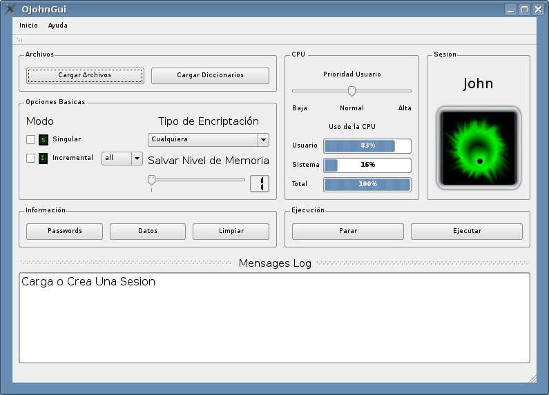
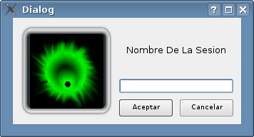
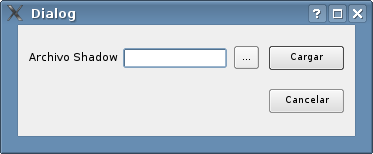
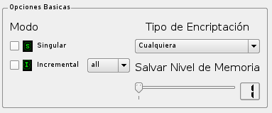
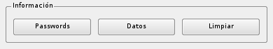
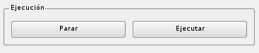

OjohnGui y OjohnCore
Sobre OHackSuite:
Es un proyecto iniciado en mayo de 2007 y planeado desde diciembre del 2006; nuestras metas son coger gran cantidad de herramientas utilizada para probar la seguridad de los computadores y redes, uniéndolas todas en una gran suite de trabajo llamado OHackSuite (Omar Hacking Suite) debido a su planeador y desarrollador principal Omar Andres Zapata,
no sobra aclara que nuestro proyecto no es con fines de vandalismo ni cosas indebidas, es solo para fines educativos, científicos y administrativos de en el área de la computación., pues OHackSuite nos permite medir la seguridad en nuestros computadores personal y una red de computadores que administremos.
Sobre John The Ripper
John the ripper es un famoso crackeador de passwords muy utilizado en el mundo hacking para descifrar password.
John The ripper Copyright (c) 1996-2006 by Solar Designer y Portions copyright (c) by their respective authors, y la versión original la puedes obtener en http://www.openwall.com/crypt/.
Fue modificada bajo los términos de la licencia GPL por Omar Andres Zapata Mesa para ser utilizada en la Suite,
la versión modificada la puedes obterner de ftp://ohack.berlios.de .
OjohnCore:
En el plan de desarrollo de OjohnCore se pretende paralelizar el crackeo de passwords implementado las librerias MPICH,
actualmente solo se le han hecho modificaciones menores como cambio de rutas de archivos de configuracion, Poner prioridad dentro del procesador “nice del sistema” el cual solo puede ser utilizado por el root o administrador del sistema entre otros, pero los mejores cambios esta por benir por ahora corre en secuancial.
OjohnGui:
Es una interfaz grafica que usuario desarrollada en c++ con las librerias Qt4 de trolltech, basada en sesiones de usuario y de facil uso.

Uso:
En la barra de menu en el item Inicio dar (Nueva sesion o Ctrl+N) y aparece un pequeño dialogo que te pide el nombre para una nueva sesion pues en la que inicia es la que trae por defecto el john the ripper llamada “john”.
Una vez creada tu sesión hay que cargar los archivos a crackear y los diccionarios a usar según sea el caso.
para ello en el grupo de botones de archivos cleckeamos “Cargar Archivos” o su shortcut Ctrl+F donde aparece un pequeño dialogo y cuando cargas el archivo el botón de deshabilita, pues solo se carga un shadow o archivo a cracker por sesión. Pro ahora el dialogo no ha sido totalmente desarrollado pues tendrá también la introducción de los archivos password y testiador de contenido ademas de unshadow.
Ahora vamos a ver las opciones básicas que se encuentran en el panel principal. El modo nos indica que tipo de ataque vamos a utilizar.
Singular es un ataque de diccionario común, tu seleccionas esta y en el botón cargar diccionario cargas uno y listo.
Incremental es un avance consecutivo y ordenado términos según se desee por ejemplo all utiliza todos los caracteres diponible, alpha utiliza solo letras , digits solo numeros y asi por el estilo.
Selecciona el tipo de encriptación deseado o deja cualquiera para que el lo busque por si solo y el niver de salvar memoria que consiste en elegir un numero de 1-3 para que el john por ejemplo en tres se preocupa por el passwords pero no por el usuario. ejemplo de nivel 3 puede ser que nos de un password pero no el usuario al que pertenece.
Informacion de la sesion:
para obterner información de la sesión se cuenta con tres botones en el panel principal. Passwords muestra los passwords crackeados hasta el momento, datos muestra los datos cargados y limpiar, limpia el panel de informacion.
Eejcucion:
Para la ejecucion se cuenta con dos botones ejecutar y para que es lo basico ,pero cuando esta en ejecucion puedes detenerlo u despues continuar donde dejaste.